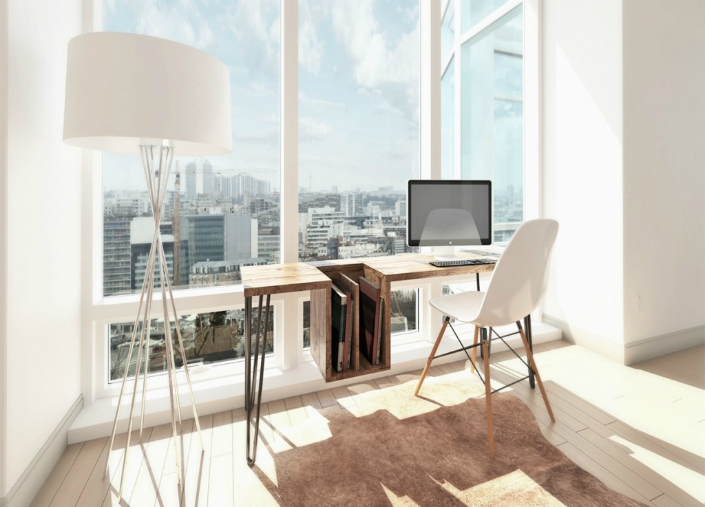
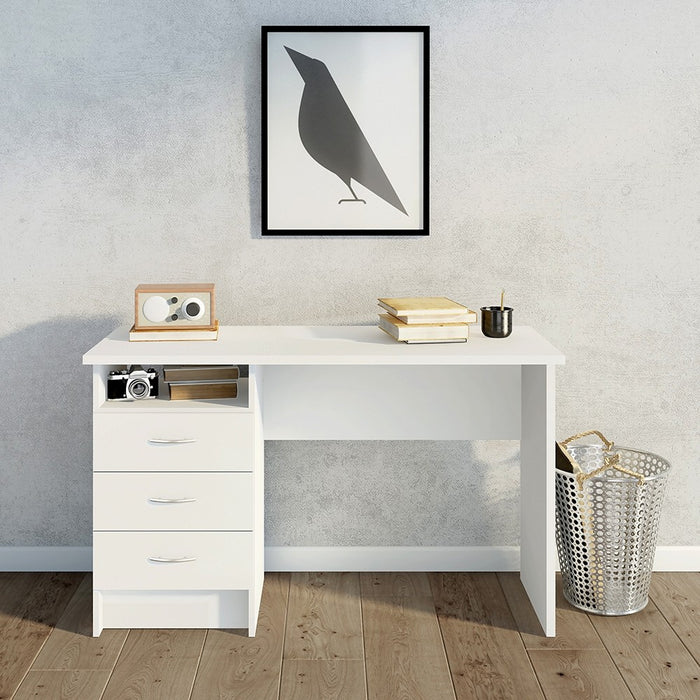
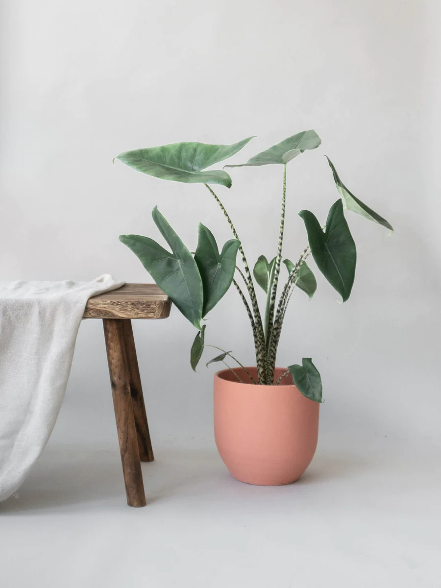

Finding simplicity in life

July 23, 2024 | 3 comments
Life has a tendency to become intricate in no time, yet it's not a necessity! We've examined numerous ways to streamline your life previously. However, this week, we're taking a distinct approach, emphasizing how you can uncover simplicity within the life you're presently experiencing.
CONTINUE READING
Keeping cooking simple
Nutrition plays a crucial role in everyone's life. Maintaining good health requires a commitment to consuming wholesome food. A straightforward method to achieve this is by keeping your culinary endeavors uncomplicated and straightforward.
CONTINUE READING

July 19, 2024 | 3 comments
Simplicity and work
Work can be a significant cause of stress, causing frustration, straining relationships, and ultimately resulting in burnout. Simplifying your work life as much as you can helps restore balance to everything.
CONTINUE READING

July 12, 2024 | 3 comments
Simple decorations
A living space doesn't truly feel like home until you've added a touch of decoration. Some either skip decorating altogether, while others go overboard, often without achieving the desired impact. Opting for simplicity can guide attention where you want it and make elements stand out more effectively.
CONTINUE READING

July 3, 2024 | 3 comments